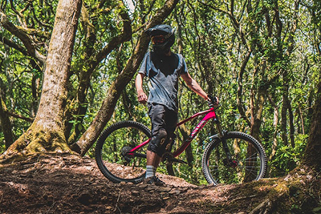

.png)
Vicious Cycles is a local store for Bikers. Whether you have a casual bike, mountain bike, high-performance tricked-out BMX bike, etc. Vicious also sells accessories.
 We cater to YOU! Whether you need a minor repair or a fully cutomized bike, we are here to offer you quality service. We give thorough consultations to ensure that the job is done correctly the first time. We know you will be satisfied with the work we do for you. We have a clean state of the art shop with quality tools and parts. Whtether your kid needs new training wheels on their bike or you need a custom BMX for an upcoming tournament, we will ensure you can focus on the moment and rest easy in knowing the bike you're on is safe and quality built.
We don’t just customize bikes. We also sell stuff we know you’ll dig. Riding is a lifestyle, and we want to help you live your life. We only carry brands that are high quality. If budget is more your priority, shop our used selections to save money while still getting the quality brands you can trust.
When it comes to industry leading innovations in cycles and accessories, Vicious Cycle products are what you have been waiting for. We sell top quality cycling equipment and have been doing it for years. Our products have become the supply line of choice and lesser companies have been copying us for some time. Don't be fooled by imitators, Vicious Cycles is the real deal. Don't settle for second best when it comes to your cycling needs, but don't feel you have to raid your savings. Vicious Cycle Products is a name you can put your trust into, at a price you can afford. Of course, Custom Work is another thing entirely. At Vicious Cycles, we are not interested in a "Race to the Bottom" when it comes to creating custom builds. If you're interested in discussing a fully-custom or customized build, come down to our store and visit with us to find out what we can really do.
Vicious Cycles Inc is a Garner-based cycle workshop founded by a few like-minded individuals in late 2010. Our mechanics build the bikes and man the workshop. Our customer service staff attends to the day to day operations. We hope to create and foster a strong passion for the local biking scene because each and every one of us is a biking enthusiast.
We believe that every machine should be an extension of its owner. We believe in the significance of individualism. We believe in the stories between your cycle and you. We believe in having fun. No matter the circumstances, we bike hard and we bike often.
You get on your bike, you ride, you fall, you might get pulled over, you overcome it all and you ride again. It’s a Vicious Cycle! So make it worth the while, don't just be part of the numbers. Ride your cycle, chase your dreams, live your life.
At Vicious Cycles, we are committed to providing superior customer service and satisfaction. Our staff will assist you every step of the way, from product selection and ordering to truly custom builds. We’ve been doing this whole custom thing for quite a while, and we've seen some ups and downs, we're loving every moment of it. A proper custom build takes time, and we’ll work closely with you to get it right. From stylish cycles to trusty monster rides, we’ve done them all. Talk with a member of our mechanics team to discuss your plan, and we'll see your dream realized.
Vicious Cycle products can be purchased/ordered at our store. Come down today and we'll get started with a purchase of an existing bike with cash, credit, or an in-house loan approval.
All custom builds will require a 25% down payment before projects will begin, and either payment in full, or an approved in-house loan or a transfer of funds to a third-party vendor. All purchases on custom cycles are final.
We exhibit at several trade shows every year. We are at home in the indoor showroom, but we believe the real showroom can only be found out on and off the road. Cycling is a lifestyle- Live Your Life
Vicious Cycles
123 Main St.
Garner, NC 27529
Phone: (919) 123-4567 Fax: (917) 123-8901
We are also on Twitter and Facebook.